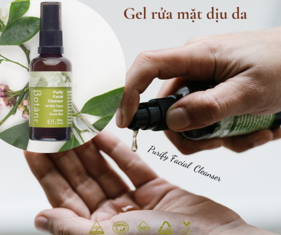
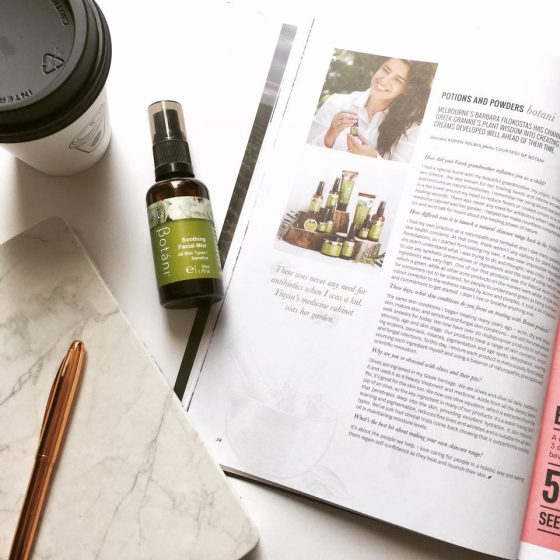
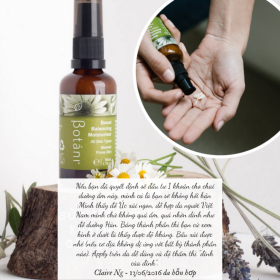

Quy Trình Chăm Sóc Da Nhạy Cảm
Da nhạy cảm được xem là “quý cô đỏng đảnh” và “khó chiều” nhất trong các loại da. Vậy phải chăm sóc da nhạy cảm thế nào, thiết kế một routine chuẩn, cơ bản cho da nhạy cảm ra sao để vừa không khiến da gặp rắc rối, vừa giúp da khỏe và đẹp dần lên? Cả nhà hãy cùng tìm hiểu qua bài viết dưới đây nhé!
Da nhạy cảm là gì?
Da nhạy cảm là làn da rất dễ bị kích ứng trước thời tiết, thức ăn, môi trường, một số thành phần trong các sản phẩm dưỡng da, một số thành phần khác nhưng chỉ bị kích ứng khi có nồng độ lớn…
Các dấu hiệu nhận biết khi làn da có những dấu hiệu kích ứng với các tác nhân trên: da bị ngứa ngáy, châm chích, nóng rát, bị căng da, da nổi mẩn đỏ và xuất hiện mụn/các nốt mụn nước nhỏ li ti…
Nguyên nhân gây nên làn da nhạy cảm
Bề mặt da có một lớp màng bảo vệ gọi là Hydrolipid. Lớp màng này hoạt động tương tự như một lá chắn bảo vệ da khỏi vi khuẩn, các tác nhân kích thích tiếp cận đến lớp biểu bì dưới da, đồng thời lớp màng Hydrolipid này còn có tác dụng giữ độ ẩm tự nhiên của da, do đó duy trì làn da săn chắc và đàn hồi.
Tuy nhiên, ở da nhạy cảm, lớp màng bảo vệ này bị yếu đi và làm cho da bị tổn thương do ảnh hưởng của các tác nhân nêu trên, và kết quả là da sẽ phản ứng lại bằng cách đưa ra các dấu hiệu có thể nhìn thấy và cảm nhận như châm chích, nóng rát, mẩn đỏ…
Lưu ý khi chăm sóc da nhạy cảm
Hiểu rõ những cơ chế trên, bạn sẽ nhận ra rằng điều đầu tiên và quan trọng nhất là cần phải bảo vệ chính lớp màng bảo vệ Hydrolipid. Một số nguyên tắc mà bạn cần nhớ khi chăm sóc da nhạy cảm:
- Không dùng quá nhiều layer sản phẩm (Tránh làm bí da và bít tắc lỗ chân lông, khiến da “khó thở”)
- Chú ý đến thành phần khi chọn mua mỹ phẩm, không sử dụng những sản phẩm có nhiều chất tẩy rửa hay bào mòn da, những sản phẩm được khuyến cáo có thể làm da kích ứng…
- Không làm mất đi độ pH tự nhiên của da
- Luôn luôn để da ở trạng thái thông thoáng
Quy trình chăm sóc da nhạy cảm
Bước 1: Làm sạch
Từ khóa của bước này là DỊU NHẸ. Bạn cần chọn cho mình sản phẩm tẩy trang và rửa mặt dịu nhẹ cho da.
Với sản phẩm tẩy trang, nên chọn những sản phẩm không chứa chất tạo mùi (fragrance), phthalates, các chất tẩy rửa bề mặt (sulfate), cồn…
Với sữa rửa mặt, bạn cũng nên chọn những sản phẩm với chú ý tương tự như tẩy trang, điều cần nhớ khi chọn sữa rửa mặt là không chọn những sản phẩm khiến da bị khô, căng sau khi rửa, vì đó là những sản phẩm có độ pH cao hơn độ pH tự nhiên của da. Nên tìm hiểu về độ pH của sản phẩm trước khi mua sữa rửa mặt là chỉ nên chọn những loại có pH từ 5.0-6.5 nhé.

Bước 2: Toner – nước cân bằng da
Cân bằng pH tự nhiên của da là điều quan trọng và là chìa khóa khi chăm sóc da nhạy cảm. Nên chọn những loại toner mà bảng thành phần không chứa những chất sau: alcohol, acids, fragrances, sodium hay ammonium lauryl sulfate… Thay vào đó, bạn nên chọn những loại toner mang tính cấp ẩm và cân bằng độ PH cho da.
Với làn da rất nhạy cảm và đang bị kích ứng, bạn có thể dùng xịt khoáng thay cho toner để làm dịu da sau bước làm sạch

Bước 3: Serum
Bạn vẫn có thể sử dụng các loại serum có chứa các chất chống oxi hoá hay thậm chí cả retinols tuy nhiên, hãy tập cho da bạn quen dần với các loại serum này. Bạn có thể bắt đầu sử dụng cách 2 ngày 1 lần và tăng dần tần suất sử dụng lên khi da đã quen và thích nghi với sản phẩm. Hãy ưu tiên các loại serum có chức năng tăng cường sức đề kháng của da hay làm dịu da.
Bước 4: Dưỡng ẩm
Tùy thuộc vào da bạn là da khô nhạy cảm, da dầu nhạy cảm hay da hỗn hợp mà chọn những sản phẩm dưỡng ẩm và số lượng các bước dưỡng ẩm phù hợp.
Cần xác định loại da để chọn những kết cấu sản phẩm phù hợp (để tránh làm da quá khô do thiếu nước hoặc quá dầu gây bí da), sau khi chọn được kết cấu sản phẩm, bạn sẽ cần chú ý đến các thành phần có thể làm da kích ứng để tránh thật xa ra nhé.
Với da dầu nhạy cảm, bạn không nên khiến da bị dầu thêm và khiến lỗ chân lông bị tắc nghẽn, hãy chọn những sản phẩm dạng lotion hay gel có kết cấu mỏng, nhẹ và thấm nhanh vào da.

Với da khô nhạy cảm, bạn cần chú ý dưỡng đủ ẩm cho da bằng cách chọn những sản phẩm dạng kem để cung cấp đủ độ ẩm và làm mềm da.
Sau khi chọn được kết cấu sản phẩm dưỡng ẩm phù hợp, bạn cần chú ý vào bảng thành phần để tránh lựa chọn những thành phần như fragrances, alcohol, retinoids, AHA, BHA,… dễ gây kích ứng da.
Làn da nhạy cảm sẽ không có nhiều sự lựa chọn cho việc dưỡng da, bạn nên tối giản quy trình chăm sóc da của mình. Chỉ cần tập trung vào làm dịu da và dưỡng ẩm đầy đủ là bạn đã có thể sở hữu làn da sáng hơn và khỏe hơn rồi đấy.